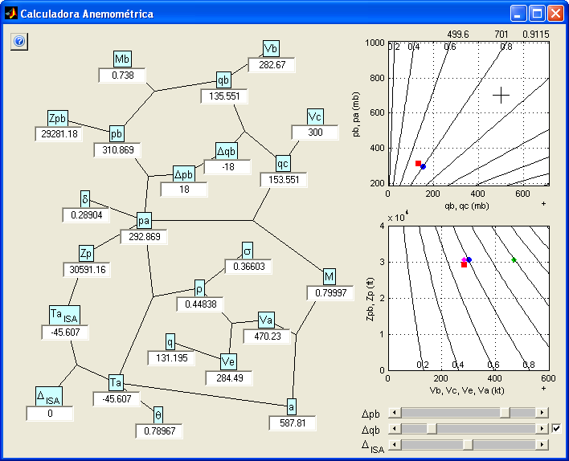
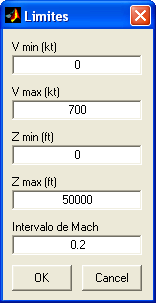

| Menu Ferramentas |
|
Essa ferramenta
permite ao usuário
calcular todas
as relações anemométricas em um dado ponto do envelope de voo. Essa é
uma ferramenta externa ao R_DAT e os parâmetros calculados não têm
relação com os dados das matrizes de trabalho.
Para acessar a
Calculadora Anemométrica, clique em “Ferramentas ► Ferramentas
externas ... ► Calculadora
anemométrica”.

Descrição e Operação
A janela da
Calculadora Anemométrica possui as seguintes áreas:
Malha de dados:
Malha que apresenta os parâmetros anemométricos e suas inter-relações.
Cada
parâmetro é apresentado por uma legenda com a nomenclatura usual e um
campo com seu valor. As unidades utilizadas são as usuais e são
mostradas caso o cursor seja posicionado sobre cada campo.
As inter-relações são representadas por linhas. Uma linha simples
indica uma relação direta e uma linha de três pontas representa uma
relação dupla.
É possível rearranjar a malha arrastando-se as legendas com o botão esquerdo do mouse. A última posição será lembrada nas chamadas subsequentes e é possível restaurar a distribuição inicial clicando com o botão direito do mouse sobre a malha e na opção "Reorganizar".
A malha contém
os seguintes campos:
|
Campo |
Descrição |
Unidade |
|
pb |
Pressão
estática básica |
Milibares |
|
qb |
Pressão dinâmica básica |
Milibares |
|
|
Altitude-pressão básica |
Pés |
| Vb | Velocidade básica | Nós |
| Mb |
Número de Mach
básico |
Adimensional |
|
Δpb |
Erro de posição
estática |
Milibares |
|
Δqb |
Erro de posição
dinâmica |
Milibares |
|
pa |
Pressão
atmosférica |
Milibares |
|
qc |
Pressão
dinâmica compressível |
Milibares |
|
Zp |
Altitude-pressão |
Pés |
|
Vc |
Velocidade
calibrada |
Nós |
|
M |
Número de Mach |
Adimensional |
|
TaISA |
Temperatura
ISA |
Graus Celsius |
|
ΔISA |
Variação de
temperatura ISA |
Graus Celsius |
|
Ta |
Temperatura
ambiente |
Graus Celsius |
|
a |
Velocidade do
som |
Nós |
|
ρ |
Densidade do ar |
Quilogramas por
metro cúbico |
|
Va |
Velocidade
aerodinâmica |
Nós |
|
Ve |
Velocidade
equivalente |
Nós |
|
q |
Pressão dinâmica |
mb |
|
δ |
Razão de pressão |
Adimensional |
|
θ |
Razão de temperatura |
Adimensional |
|
σ |
Razão de densidade |
Adimensional |
Gráfico q × p:
N
" / " movimentação sobre uma linha iso-Mach.
Gráfico V
× Z:
N
" \ " movimentação sobre uma linha iso-Mach.
Para alterar os
limites do gráfico

Indique os novos limites desejados para o eixo das velocidades, eixo das altitudes e o intervalo das linhas de Mach e clique "OK".
Também é possível alterar os limites dos gráficos definindo um retângulo com o botão esquerdo do mouse na região de interesse. Um duplo-clique com o botão esquerdo restaurará os limites iniciais
Barras
de rolagem
Três barras de rolagem permitem variar os valores de Δqb, Δpb e ΔISA
entre os limites de -30 a +30 mb e -30 a +30 °C, respectivamente.
Clique nos extremos ou no corpo das barras para alterar os valores. A malha de dados e os gráficos serão atualizados automaticamente.
À direita da barra de rolagem de Δqb há uma caixa de seleção para considerar Δqb = -Δpb, comportamento comum em aeronaves de asa fixa.
Caso esteja selecionado, as barras de Δqb e Δpb ficarão interligadas.
Sair
Para sair da
ferramenta, clique no botão de fechamento da janela no canto superior
direito.
 |
Ferramentas externas | Desempenho em curva |  |